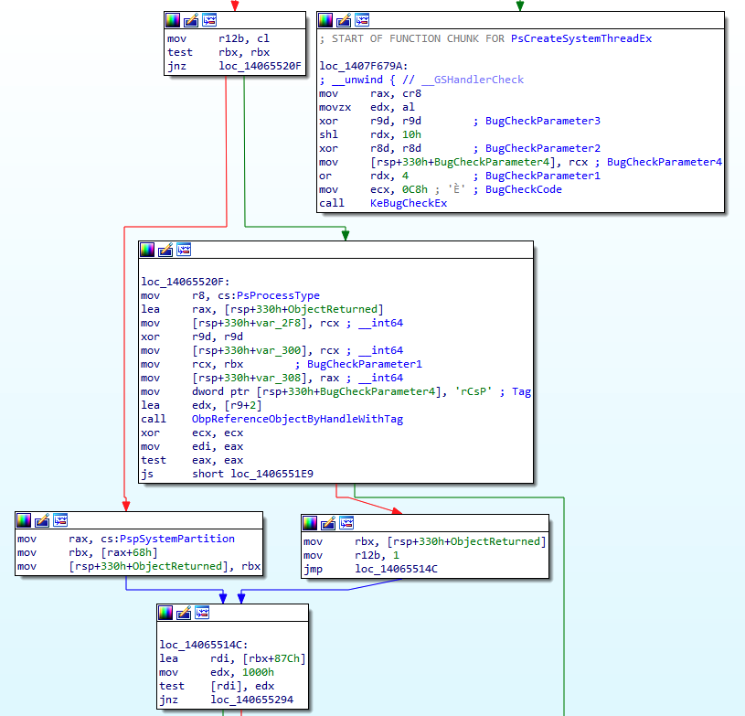

System Threads and their elusiveness. ‘Practical Reverse Engineering’ solutions - Part 2
Introduction
In this second blog post about Practical Revere Engineering solutions I’d like to focus on the following exercise on Page 128.
This one is the first related to Asynchronous and Ad-Hoc Execution kernel objects, and specifically on how System Threads are invoked via the PsCreateSystemThread routine.
Here is the original exercise statement:
After reading some online forums, you notice some people suggesting that PsCreateSystemThread will create a thread in the context of the calling process. In other words, they are suggesting that if you call PsCreateSystemThread in an IOCTL handler, the new thread will be in the context of the requesting user-mode application. Assess the validity of this statement by writing a driver that calls PsCreateSystemThread in the IOCTL handler. Next, experiment with a non-NULL ProcessHandle and determine if the context differs.
Before jumping into answering the actual exercise, we should get acquainted with all the bits and pieces that make up the current state of affairs.
System Process and System Threads
Process ID 4, also known as System Process is a container for kernel-mode system threads: these threads have similar ETHREAD/KTHREAD attributes to a userland threads but their code runs only in system address space (that is, either ntoskrnl or a device driver).
These threads are employed by the Windows kernel as part of its submodules like memory management, I/O management, Security and so forth.
As a rule, system threads live and die just within the System process. However a driver can spawn system threads in an arbitrary process context: this is done in case a thread requires userland address space interaction or, in general, access to another process resource.
Creating System Threads
Going back to the original exercise’s statement from the book, it also suggests to crawl forums containing discussions on System Threads inside the IOCTL handler’s context. A first hit is from OSR which looks exactly the one we are after.
Kernel device drivers can create system threads by using either PsCreateSystemThread or, starting from Windows 8,IoCreateSystemThread and no matter what routine we are using to spawn it, the driver must terminate the thread via PsTerminateSystemThread.
Since the exercise explicitly asks for PsCreateSystemThread we are not going to spend any extra energy on the second API.
Here’s the PsCreateSystemThread syntax breakdown from MSDN:
NTSTATUS PsCreateSystemThread(
_Out_ PHANDLE ThreadHandle,
_In_ ULONG DesiredAccess,
_In_opt_ POBJECT_ATTRIBUTES ObjectAttributes,
_In_opt_ HANDLE ProcessHandle,
_Out_opt_ PCLIENT_ID ClientId,
_In_ PKSTART_ROUTINE StartRoutine, S
_In_opt_ PVOID StartContext);
The fourth argument, ProcessHandle is of great interest to us as we’ll find out shortly.
MSDN hints:
If this parameter is not supplied, the thread will be created in the initial system process. This value should be NULL for a driver-created thread. Use the NtCurrentProcess macro, defined in Ntddk.h, to specify the current process.
Enough with these premises, though. It’s now time to take a closer look at IDA and get down to it.
It immediately appears that PsCreateSystemThread is just a wrapper for PsCreateSystemThreadEx, so we are going to focus only on the latter.
Quite at the beginning of this function, the ProcessHandle parameter held in r9 is then saved into rbx and verified to be non-null afterwards.

From the above snippet, if ProcessHandle (rbx) is null (left branch), PspSystemPartition offset 0x68 is dereferenced and saved into rbx which, at this point, acquires new significance as it will be used as ProcessPointer parameter when calling PspCreateThread.
But now the question is, what’s really at offset 0x68 of PspSystemPartition?
It looks like PspSystemPartition is an opaque structure, but at first glance it seems that this offset is used by kernel functions to get a hold of the System’s EPROCESS value.
Let’s verify this assumption:
2: kd> dq poi(nt!PspSystemPartition)+68 L1
ffffb18c`a0a96d48 ffffb18c`a0a5f040
2: kd> !process 0 0 system
PROCESS ffffb18ca0a5f040
SessionId: none Cid: 0004 Peb: 00000000 ParentCid: 0000
DirBase: 001ad000 ObjectTable: ffffd702008245c0 HandleCount: 2583.
Image: System
Cool, the two EPROCESS addresses do indeed match.
Moving our attention to the right branch, we can notice that when a non-null ProcessHandle is given,ObpReferenceObjectByHandleWithTag is invoked with the original caller process handle as an argument and it will be fetch the kernel object associated with that handle.
The function will return an Object of EPROCESS type, which will be used as a process context when invoking PspCreateThread.
To summarize, if we we provide a null ProcessHandle, the value of System EPROCESS will be passed when calling PspCreateThread, else will be used the one obtained after having queried ObpReferenceObjectByHandleWithTag.
Building the PoC driver
Armed with this information we can now write a quick PoC driver that creates two system threads: one in the System process’ context and one in the context of the calling IOCTL process.
After having created the usual device driver and the symbolic link through IoCreateDevice and IoCreateSymbolicLink respectively, we move on and define the following Major Functions:
DriverObject->MajorFunction[IRP_MJ_CREATE] = SysThreadCreateClose;
DriverObject->MajorFunction[IRP_MJ_CLOSE] = SysThreadCreateClose;
DriverObject->MajorFunction[IRP_MJ_DEVICE_CONTROL] = SysThreadDeviceControl;
DriverObject->DriverUnload = SysThreadUnload;
The hero of the story is - it goes without saying - the function associated with the IRP_MJ_DEVICE_CONTROL routine, that is SysThreadDeviceControl in our instance (error checks omitted).
NTSTATUS SysThreadDeviceControl(PDEVICE_OBJECT deviceObject,PIRP Irp)
{
irpSp = IoGetCurrentIrpStackLocation(Irp);
if (irpSp->Parameters.DeviceIoControl.IoControlCode == IOCTL_SYSTHREAD_METHOD_BUFFERED)
{
// NULL ProcessHandle = System Thread created in SYSTEM(4) process context.
threadStatus = PsCreateSystemThread(&hThreadA,THREAD_ALL_ACCESS,NULL,NULL,NULL,(PKSTART_ROUTINE)SysThreadStartSystem,NULL);
ZwClose(hThreadA);
// ProccessHandle of caller process retrieved via NtCurrentProcess() macro = System Thread in Caller Process context.
threadStatus = PsCreateSystemThread(&hThreadB,THREAD_ALL_ACCESS,NULL,NtCurrentProcess(),NULL,(PKSTART_ROUTINE)SysThreadStartIOCTLHandler,NULL);
ZwClose(hThreadB);
}
Irp->IoStatus.Status = status;
Irp->IoStatus.Information = 0;
IoCompleteRequest(Irp, IO_NO_INCREMENT);
return status;
}
Once the current IRP is processed and the IOCTL matches the one defined in IOCTL_SYSTHREAD_METHOD_BUFFERED, we assume that the user application is willing to interact with this very routine.
We then call PsCreateSystemThread and start a first thread with a NULL ProcessHandle (fourth parameter) and SysThreadStartSystem as start routine.
Immediately afterward, we launch another thread in the userland IOCTL context by using the NtCurrentProcess() macro to obtain the ProcessHandle parameter and SysThreadStartIOCTLHandler as start routine.
Note that we have to use the Nt (and not the Zw) version of this macro since the parameters are coming from a user mode process.
Apart from facilitating the debugging process, the two thread StartRoutines are not doing that much.
VOID SysThreadStartSystem(PVOID StartContext){
UNREFERENCED_PARAMETER(StartContext);
DbgPrint("SysThreadStartSystem has been called.\n");
PsTerminateSystemThread(STATUS_SUCCESS);
}
VOID SysThreadStartIOCTLHandler(PVOID StartContext) {
UNREFERENCED_PARAMETER(StartContext);
DbgPrint("SysThreadStartIOCTLHandler has been called.\n");
PsTerminateSystemThread(STATUS_SUCCESS);
}
That’s about the gist of it and - sure enough - we are going to need also the userland app in order to trigger the two StartThread functions (for the entire project check the link at the end of the post).
Validating assumptions
Ok, since we know that the truth lies only in the debugger (as oppsoed to the source code) we want to validate our theories. We so place two breakpoints at both ‘ThreadStart’ functions:
0: kd> x SysThreadHandler!*ThreadStart*
fffff802`16d81350 SysThreadHandler!SysThreadStartSystem (void *)
fffff802`16d81320 SysThreadHandler!SysThreadStartIOCTLHandler (void *)
0: kd> bp SysThreadHandler!SysThreadStartSystem
0: kd> bp SysThreadHandler!SysThreadStartIOCTLHandler
As soon as we fire the user application we are going to hit the first function’s breakpoint:
Breakpoint 0 hit
SysThreadHandler!SysThreadStartSystem:
fffff802`16d81350 48894c2408 mov qword ptr [rsp+8],rcx
0: kd> !process -1 0
PROCESS ffffb18ca0a5f040
SessionId: none Cid: 0004 Peb: 00000000 ParentCid: 0000
DirBase: 001ad000 ObjectTable: ffffd702008245c0 HandleCount: 2815.
Image: System
And by looking at theCid we can tell is the well-known System (4) process id.
Continuing execution…
Breakpoint 1 hit
SysThreadHandler!SysThreadStartIOCTLHandler:
2: kd> !process -1 0
PROCESS ffffb18ca9ec5340
SessionId: 1 Cid: 23f8 Peb: a651337000 ParentCid: 1ff8
DirBase: 127e5f000 ObjectTable: ffffd7021b4185c0 HandleCount: 34.
Image: UserApp.exe
…. we hit the second breakpoint and confirm that the second kernel thread belongs to the userapp process.
Mapping calls to PsCreateSystemThread: dynamic vs static
The second part of this exercise is asking for:
Cross-reference as many calls to PsCreateSystemThread as possible in the kernel image. Determine whether any of them pass a non-NULL ProcessHandle parameter. Explain the purpose of these routines. Repeat the exercise for as many functions as possible.
As we already mentioned, the reason for creating a system-thread in a non-system process context is to be able to interact with userland address space.
The only requirement is to pass a valid ProcessHandle so we craft a conditional breakpoint that checks that r9 (fourth argument) is non-null.
bp nt!PsCreateSystemThread ".if @r9 != 0x0 {.printf \"Found NON-NULL call to PsCreateSystemThread with Process Handle value of 0x%p \\n\",r9} .else {gc}"
And verify who the handle belongs to as soon as we have a hit.
Found NON-NULL call to PsCreateSystemThread with Process Handle value of 0xffffffff80000fd0
nt!PsCreateSystemThread:
fffff802`0dc55040 4c8bdc mov r11,rsp
2: kd> !handle @r9
PROCESS ffffb18ca3e5b080
SessionId: 0 Cid: 0368 Peb: bfe1bac000 ParentCid: 02d0
DirBase: 20df61000 ObjectTable: ffffd702045793c0 HandleCount: 1301.
Image: svchost.exe
Kernel handle table at ffffd702008245c0 with 3102 entries in use
80000fd0: Object: ffffb18ca5a6c040 GrantedAccess: 001fffff (Protected) Entry: ffffd70204a35f40
Object: ffffb18ca5a6c040 Type: (ffffb18ca0a957a0) Process
ObjectHeader: ffffb18ca5a6c010 (new version)
HandleCount: 1 PointerCount: 64395
We can further check call stack to pinpoint the originating function.
2: kd> k
# Child-SP RetAddr Call Site
00 ffffea0d`059a99b8 fffff802`0d8c9bdc nt!PsCreateSystemThread
01 ffffea0d`059a99c0 fffff802`0d8c99cd nt!SmKmStoreHelperStart+0x3c
02 ffffea0d`059a9a10 fffff802`0dc54ce8 nt!SMKM_STORE<SM_TRAITS>::SmStStart+0x251
03 ffffea0d`059a9ad0 fffff802`0dc554cc nt!SmProcessCreateRequest+0x228
04 ffffea0d`059a9c30 fffff802`0dc55550 nt!SmpDirtyStoreCreate+0xd4
05 ffffea0d`059a9cf0 fffff802`0dcf65d9 nt!SmpKeyedStoreCreate+0x4c
06 ffffea0d`059a9d30 fffff802`0dcf5231 nt!SmProcessCreateNotification+0x45
07 ffffea0d`059a9d60 fffff802`0dc6c477 nt!PspAllocateProcess+0x1ba1
08 ffffea0d`059aa2d0 fffff802`0da071b5 nt!NtCreateUserProcess+0xa17
09 ffffea0d`059aaa90 00007ffd`1512d8a4 nt!KiSystemServiceCopyEnd+0x25
0a 000000bf`e1cfcbc8 00007ffd`12bb2d2c 0x00007ffd`1512d8a4
0b 000000bf`e1cfcbd0 00000000`00000000 0x00007ffd`12bb2d2c
In this case the system thread has been created by the Store Manager sub component, within the context of svchost.exe service process.
This approach is obviously time-consuming and error prone as it is going to depend on external dynamic events to map each and every function call.
To map all the call we could use IdaPython and statically fetch all the cross references by filtering out any non-null value of ProcessHandle, for example:
ps1 = idc.get_name_ea_simple("PsCreateSystemThread")
ps2 = idc.get_name_ea_simple("PsCreateSystemThreadEx")
def filterXrf(targetFunction):
for addr in CodeRefsTo(targetFunction, 0):
funcName = get_func_name(addr)
func = ida_funcs.get_func(addr)
funcStart = func.start_ea
funcEnd = func.end_ea
print("Calling function: %s at 0x%x %s - function start 0x%x " % (funcName,addr, idc.generate_disasm_line(addr, 0),funcStart))
cur_addr = addr
while(cur_addr > funcStart):
cur_asm = idc.generate_disasm_line(cur_addr, 0)
if "xor r9d, r9d" in cur_asm:
break
if "r9" in cur_asm:
print("0x%x %s" % (cur_addr, idc.generate_disasm_line(cur_addr, 0)))
break
cur_addr = idc.prev_head(cur_addr)
filterXrf(ps1)
filterXrf(ps2)
If we run it in IDA we can spot a few calls from Cache and Store manager.
Calling function: SmKmStoreHelperStart
0x1402c9bbf mov r9, rdx; ProcessHandle
Calling function: ?SmStWorkerThreadStartThread@?$SMKM_STORE@USM_TRAITS@@@@SAJPEAU1@PEAXP6AX1@ZPEAPEAU_ETHREAD@@@Z
0x1402c9c5f mov r9, rdx; ProcessHandle
Calling function: ?SmCompressCtxCreateThread@?$SMKM_STORE_MGR@USM_TRAITS@@@@SAJPEAU_SM_COMPRESS_CONTEXT@1@PEAU1@K@Z
0x14032203e mov r9, [rdi+740h]; ProcessHandle
Calling function: CcInitializePartition
0x1403bdb71 mov r9, [rbp+70h]; ProcessHandle
Calling function: CcInitializeAsyncRead
0x1403be10b mov r9, [rax+70h]; ProcessHandle
Even though win32kfull.sys imports PsCreateSystemThread I could not spot any intermodular calls during debugging: this is - guesswork on steroids here - due to the recent modifications on desktop heaps after Redstone 5.
Kudos to Felix Schwyzer for the inspirational blog post on this subject.
The complete project can be found here.